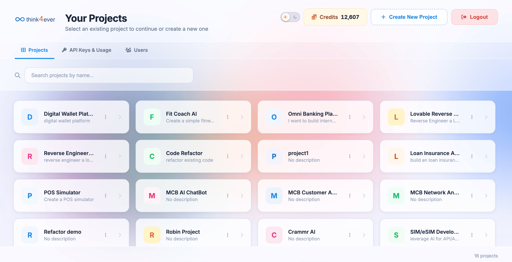
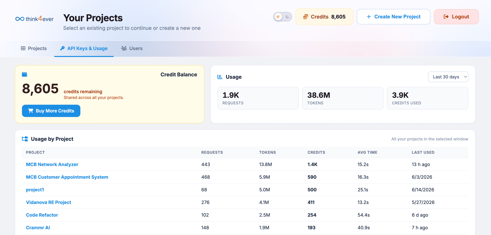

Managing Your Projects
The Your Projects screen acts as the primary directory for your active workspace builds within the Think4Ever ecosystem. From this centralized dashboard, you can open existing initiatives, configure system-wide API credentials, or launch completely new software development lifecycles.

Global Navigation & Utility Header
The top-right header control area gives you immediate access to balance details and account session toggles:
- Today's Requests: Displays the count of AI agent actions processed during the current calendar day.
- Credits Counter: Shows your current remaining credit balance across the workspace (e.g., Credits: 8,116) to help ensure you have enough resources before spinning up heavy builds.
- + Create New Project Button: Click this blue-bordered button to initialize a new workspace environment.
- Logout Button: Click this orange button to securely terminate your active session and return to the main login portal.
Workspace View Toggles
Directly below the main title header, you can switch between two core operational modules:
- Projects (Current View): Displays your current list of active workspaces.
- API Keys & Usage: Directs you to the management screen for generating, copying, or revoking the authorization tokens required to integrate external endpoints with your AI agents.
Project Search & Directory
- Search Input Field: Use the "Search projects by name..." text bar to quickly filter your dashboard cards when managing multiple parallel builds.
- Project Status Cards: Each card represents a standalone, dedicated development sandbox. Clicking anywhere on a card launches its underlying end-to-end SDLC pipeline dashboard.
The system layout organizes your builds into structured elements:
- Project Icon A color-coded block displaying the primary letter of the project name for quick visual tracking.
- Project Title: The explicit name assigned to the build (e.g., MCB Customer Appointment, Vidanova Retail Lending, First Topup Project).
- Description Field: Houses custom metadata text or details outlining the project parameters (defaults to "No description" if blank).
- Total Project Count: Located at the bottom right corner of the footer, this indicates your absolute usage volume (e.g., 5 projects), helping you track how close you are to your subscription plan maximum project ceiling.
API Keys & Usage
The API Keys & Usage sub-tab provides a granular overview of resource allocation, active expenditures, and usage metrics across individual projects over a designated time window.

Global Balance & Summary Header
-
Credit Balance Card:
Displays your current overall reserve asset volume (8,116
credits remaining), which is shared dynamically across all
active project pipelines
- Click the blue Buy More Credits button to immediately add individual top-up credits to your account.
-
Global Usage Overview Panel:
Aggregates multi-project operational metrics for the
selected time range (e.g., Last 30 days dropdown filter):
- Requests: Total volume of pipeline calls executed (Sample Data: 797).
- Tokens: Absolute quantity of processing data parsed (19.5M).
- Credits Used: The equivalent billing credits consumed by those tokens (Sample data: 7.8K).
- Est. Cost Estimated financial translation of your total monthly consumption (Sample data: $129.27).